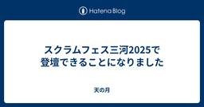
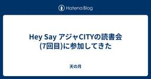
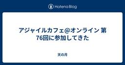
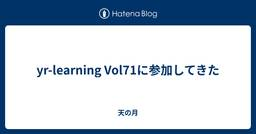
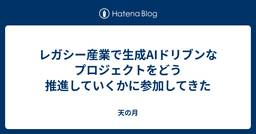
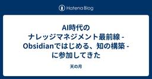
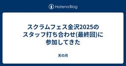

天の月
https://aki-m.hatenadiary.com/
ソフトウェア開発をしていく上での悩み, 考えたこと, 学びを書いてきます(たまに関係ない雑記も)
フィード

スクラムフェス三河2025で登壇できることになりました
天の月
表題の通り、スクラムフェス三河2025で登壇できることになったので、今日はその告知です。 発表概要 Acceptが決まったときの心境 登壇にあたっての想い 発表概要 confengine.com これまで様々な業種・業態でプロダクト開発をしてきましたが、2024年半ばからは複数の製造業のプロダクトに携わる機会が出てきました。とはいえ、プロダクト開発の概要を聞かされたときは、アジャイル開発とは程遠い現場に聞こえた上に自分の理想とする環境との乖離も大きく感じました。 正直飛び込むのを躊躇するようなタイミングもありましたが、スクラムフェス三河で話せるネタの一つになるだろうし、製造業の闇と洗礼を浴びる…
40分前

Hey Say アジャCITYの読書会(7回目)に参加してきた
天の月
表題のイベントに参加してきたので、会の様子を書いていきます。 前回に引き続き、ソフトウェアテスト徹底指南書 〜開発の高品質と高スピードを両立させる実践アプローチを読むことになりました。 https://www.amazon.co.jp/dp/B0FBG4GM9M プロダクトアウトからコンセプトアウトへ テストやレビューをひたすら増やせばいいというアプローチ 自分の手掛ける品質を考える手法 期待に従うか期待を超えるか？ 品質特性やテストピラミッドを重視し続けるチーム プロダクトアウトからコンセプトアウトへ 書籍の記載を見て、プロダクトオーナーがQAに転身みたいな話はあんまり聞かない印象があるんだ…
1日前

アジャイルカフェ@オンライン 第76回に参加してきた
天の月
agile-studio.connpass.com こちらのイベントに参加してきたので、会の様子と感想を書いていこうと思います。 会の概要 会の様子 Scrum Guide Expansion Packに関する簡単な説明 Scrum Guide Expansion Packをどう読んだか お気に入りの箇所 現場での活用方法と注意点 会全体を通した感想 会の概要 アジャイルコーチの3人がアジャイル実践者の悩みに対してああだこうだと答えていくイベントです。 今回のテーマは、「アジャイルコーチに聞く「Scrum Guide Expansion Pack」の活用方法と注意点」でした。 会の様子 Scr…
3日前

yr-learning Vol71に参加してきた
天の月
https://yr-camp.connpass.com/event/362198/ こちらのイベントに参加してきたので、会の様子と感想を書いていこうと思います。 雑談 雑談 いつもどおりゆるりと雑談から話が始まっていきました。が、結局最後まで雑談していました笑 AIを信じすぎる人がいて、その人は他人が言っても聞かないけれどAIが言うと聞くみたいなことが起きるというお話でした。 また、開発生産性カンファレンスやその後のTDDyyxがめちゃくちゃ良かったという話をしていて、Kent Beckと会えたのが感動したし、t_wadaさんの講演を聞いてめちゃくちゃ良かったという話も出ていました。TDDy…
3日前
スクラム祭りの打ち合わせ(44回目)をしてきた
天の月
aki-m.hatenadiary.com こちらの打ち合わせをしてきたので、会の様子と感想を書いていこうと思います。 スポンサーメール返信 Keynoteスピーカーの更新 運営メンバーで回答が難しいメール対応 ドラフト会議の段取り決め スポンサーメール返信 スポンサーからメールをいただいていたのでそちらに対して返信をしていきました。(今回はロゴの送付周りのお話でした) 最近定例会で必ずやるタスクとしてスポンサーメール返信は入れていて、一週間に一度になってしまうというデメリットこそあれど運営MTGの中で持続可能な形で返信できているのはいいことだなと思いました。 Keynoteスピーカーの更新 …
4日前

レガシー産業で生成AIドリブンなプロジェクトをどう推進していくかに参加してきた
天の月
generative-ai-conf.connpass.com こちらのイベントに参加してきたので、会の様子と感想を書いていこうと思います。 会の概要 会の様子 レガシー産業でリープフロッグが起きるときの共通の条件とは？ 産業内の生成アレルギーをどうやって解消するか？生成AIに馴染みない組織や人材とどう向き合えばいいのか？ 会全体を通した感想 会の概要 以下、イベントページから引用です。 生成AI Confは生成AIのビジネスへの応用、及びそれを通した社会貢献を目的としたコミュニティです。 「生成AIのビジネスへの活用」をテーマに、実践ベースの体験や知見、ノウハウを幅広く扱います。 現在、急激…
5日前

AI時代のナレッジマネジメント最前線 - Obsidianではじめる、知の構築 -に参加してきた
天の月
https://findy.connpass.com/event/357742/ こちらのイベントに参加してきたので、会の様子と感想を書いていこうと思います。 会の概要 会の様子 増井さんの講演 松濤Vimmerさんの講演 Q&A 階層タグの使い方をもっと教えてほしい タグの規則性で工夫していることは？ フォルダの運用ガイドラインは？ 会社PCで利用したいと思ったときにはどうするといいのか？ 会全体を通した感想 会の概要 以下、イベントページから引用です。 生成AIの普及により、個人の知識管理の在り方が大きく見直されつつあります。 特に「Obsidian」のようなPersonal Knowle…
6日前

スクラムフェス金沢2025のスタッフ打ち合わせ(最終回)に参加してきた
天の月
今日はスクラムフェス金沢2025の最終回(ふりかえり)をしてきたので、会の様子と感想を書いていこうと思います。 情報保障 議事録 タスク整理の仕方 会場とオンライン スポンサーチケット 次回開催時期 情報保障 スクラムフェス仙台では情報保障に関しては業者に頼んでおり、その業者の方が専任で修正をするようにしているという話がありました。それなりにお金がかかるということもあるのですが、スクラムフェス金沢の最終収支を見ると赤字にはならない範囲だったということで、来年やるならそのような手立てをすることも大切なんじゃないか？という意見が出ていました。 議事録 Discordでやっているとどうしても議事録を…
7日前

Claude Code Deep Diveに参加してきた
天の月
https://cartaholdings.connpass.com/event/360380/ こちらのイベントに参加してきたので、会の様子と感想を書いていこうと思います。 会の概要 会の様子 hiragramさんの発表 パネルディスカッション Claude Codeの使い方 Claude Codeの限界 「良いコード」の指示 会全体を通した感想 会の概要 第一線でAI Coding Agentを使い込むエンジニアたちがClaude CodeにDeep Diveするイベントです。 会の様子 hiragramさんの発表 最初に.~/.claude/projectsの構造に関する話があり、シンプ…
9日前
アジャイルカフェ@オンライン 第75回に参加してきた
天の月
https://agile-studio.connpass.com/event/358698/ こちらのイベントに参加してきたので、会の様子と感想を書いていこうと思います。 会の概要 会の様子 1on1やワークショップを実施 用語のずれ アジャイルへの認識を揃えないほうがいいのでは？ タイムライン 組織でアジャイルの認識を揃える方法 会全体を通した感想 会の概要 アジャイルコーチのお三方がアジャイル実践者から寄せられる悩みに答えていくイベントです。今日のテーマは「組織やチーム内で「アジャイル」への認識を揃えるための方法」でした。 会の様子 1on1やワークショップを実施 1on1やワークショッ…
9日前
大人のソフトウェアテスト雑談会 #276【そうめん】に参加してきた
天の月
大人のソフトウェアテスト雑談会 #276【そうめん】 - connpass 今週もテストの街葛飾に行ってきたので、会の様子と感想を書いていこうと思います。 コーチングの練習 研修 WACATE スクラムフェス三河のプロポーザル 開発生産性カンファレンス 全体を通した感想 コーチングの練習 パーソナルコーチングを最近勉強しているという参加者が、コーチングの種明かしをしながら(今の質問はこういう意図やこういうテクニックがあったみたいなことを話しながら)コーチングするという話がありました。 研修 コーチングに限らず研修は受けられるものは受けたいとは考えているものの、なかなかお金がかかってくるという側…
11日前
スクラム祭りの打ち合わせ(43回目)をしてきた
天の月
aki-m.hatenadiary.com こちらの打ち合わせをしてきたので、会の様子と感想を書いていこうと思います。 スポンサーメール返信 キャッシュ・フロー表の更新 リファインメント ホームページにロゴ掲載 スポンサーメール返信 スポンサーメールに返信しました。 ちょっとどう対応したらいいのかがわからず苦心していたので、一旦は素直に対応中である旨を伝えたうえで、素直に対応が分かりそうな人に対してお願いをすることにしました。 スポンサーの方に対しては、申し訳ないですがもう少々お待ちいただきたいという旨をメールで返信することにました。 キャッシュ・フロー表の更新 キャッシュ・フロー表を更新しま…
11日前
スクラムフェス三河2025にプロポーザルを出した
天の月
タイトルの通り、スクラムフェス三河2025にプロポーザルを出したので、今日はその告知です。 プロポーザル概要 プロポーザルを出した理由 個人的に楽しみなポイント プロポーザル概要 Scrum Fest Mikawa 2025 - 製造業のプロダクト開発で見つけた『本当にほしいモノ』を作る醍醐味〜製造業というラベル付けを超えて〜 | ConfEngine - Conference Platform これまで様々な業種・業態でプロダクト開発をしてきましたが、2024年半ばからは複数の製造業のプロダクトに携わる機会が出てきました。とはいえ、プロダクト開発の概要を聞かされたときは、アジャイル開発とは程…
12日前
2025年6月のふりかえり
天の月
2025年も半年が終わったので、ふりかえりをしていこうと思います。 仕事 社外活動 プライベート 仕事 他の領域と比べてバランスが崩れ気味だという話をちょこちょこ書いていたのですが、今月は完全に崩れていてほぼ仕事という感じでした。 急転直下の展開といいますか、自分でも本当にまったく予想していない展開になって、その展開自体はすごくチャレンジングだし楽しみもあるものだったのですが、大分重たい仕事でもあって数日間は本当に仕事が自分に務まるのか非常に不安になりました。(割とポジティブにものを考えるのは得意だしリフレーミングみたいなのも割とできるタイプなので、人生で仕事をしていて始めてそのような感情にな…
13日前
スクラムフェス金沢2025のスタッフふりかえりをしてきた
天の月
タイトルの通り、スクラムフェス金沢2025のスタッフふりかえりをしてきたので、今日はその様子を書いていこうと思います。 ふりかえりで出た話題たち ふりかえりで議論した話題たち 情報保障 Yanagiさん頼みの改善 タスク分担 真面目な運営 当日人手が足りなかった ふりかえりで出た話題たち 元々Discordのスレッド内にちょこちょこ溜めていたのですが、来年以降も見やすいようにということでMiroボードに転記しました。追加で幾つか付箋も出て、結果的には以下のようになりました。 ふりかえりで議論した話題たち 情報保障 今回の取組という点では、ノウハウもお金もない中で最善の活動はできていたのかな、と…
14日前
Hey Say アジャCITYの読書会(6回目)に参加してきた
天の月
表題のイベントに参加してきたので、会の様子を書いていきます。 今日からはソフトウェアテスト徹底指南書 〜開発の高品質と高スピードを両立させる実践アプローチを読むことになりました。 https://www.amazon.co.jp/dp/B0FBG4GM9M 書籍決め 読書会 モダンな開発に必要なテストの知識・技術 謝辞に出てくる人の豪華さ 優れたテスト チームのテスト能力 ソフトウェアテストの定義 テストが削減されがちな理由 制約があるからこそ 書籍決め 今日は書籍を決めていこうという会だったのですが、参加者が全員「ソフトウェアテスト徹底指南書 〜開発の高品質と高スピードを両立させる実践アプロ…
15日前
yr-learning Vol70に参加してきた
天の月
https://yr-camp.connpass.com/event/360536/ こちらのイベントに参加してきたので、会の様子と感想を書いていこうと思います。 エクストリーム近況 再帰版のfizzBuzzLoop解消 全体を通した感想 エクストリーム近況 近況報告をしていたのですが、エピソードが色々とおかしくて陥っている状況もめちゃくちゃだったので、エクストリーム近況報告だという話が出ていました笑 内容的にはNDAを結んでいる状態だったのでほとんど何も書けないのですが、アジャイルコーチが特定下の状況でまったく機能しなくなる話や、変に考え方や経験に対してこだわりが出てしまっている人よりかは新…
17日前
スクラム祭りの打ち合わせ(42回目)をしてきた
天の月
aki-m.hatenadiary.com こちらの打ち合わせをしてきたので、会の様子と感想を書いていこうと思います。 バックログ更新 Confengineをアップデート ドラフト会議日程決め 運営メンバーをGoogle Groupsに追加 Discordコメントの返信 地域トラック確認 スポンサーメール返信 バックログ更新 直近やる必要がある作業が少し溜まってきたので、バックログを更新しました。ついでに幾つかの作業はクローズができそうだったのでクローズをしました。 また、最近毎回やっている作業に関しては固定で話す内容のリストに組み込むことにしました。 Confengineをアップデート Co…
18日前
大人のソフトウェアテスト雑談会 #275【おきゅうと】に参加してきた
天の月
https://ost-zatu.connpass.com/event/360210/ 新規事業の要注意点 新規事業では人が多すぎると逆に難しくなるという話や、ビジョンをいじりだしたらそれは注意したほうがいいという話がありました。(自社のビジョンは顧客にとってまるで関係がない) おおひらさんのプロポーザル おおひらさんがスクラムフェス三河に何をプロポーザルとしてだしてほしいのか？というのを皆で出し合っていきました。 QAやテスターの歴史 製造業のQAの歴史 テスターやmiwaさんへの愛 スクラムマスターにQAがなることの何がいけないのか？ Alloyを使っている話 といった候補があがっていまし…
18日前
XP祭り2025の運営MTG(5回目)に参加してきた
天の月
XP祭りの運営MTG(5回目)に参加してきたので、会の様子を書いていこうと思います。 出版社対応 Confengineの状況確認 Kent Beckとのランチ会 次回 出版社対応 XP祭りはいつも書籍支援をいただいているのですが、支援いただけないかのお願いをどの出版社の方々向けにしていくか？というのを簡単に話していきました。(基本的には昨年献本いただけた会社さんに声をかけていく形でいきました) 詳細な活動に関しては、希望者を募ってそこで一緒にやりましょうという話をしました。 Confengineの状況確認 confengine.com 今年は公募が8月までということもあり、まだ期限的には余裕が…
19日前
LLMのプロンプトエンジニアリング FL#98に参加してきた
天の月
LLMのプロンプトエンジニアリング FL#98 - connpass こちらのイベントに参加してきたので、会の様子と感想を書いていこうと思います。 会の概要 会の様子 講演 パネルトーク AI系のプロジェクトで楽しかったことは？ これからのエンジニアに必要な能力は？ 書籍にアップデートしたい情報は？ Q&A システムプロンプトはデグレの可能性もあると思うが、コードの改修で済むならコードの改修を優先すべきか？ 評価の自動化はできるのか？ MCP流行の理由は？ Geminiでは大量のプロンプトを入れても問題なく処理できるようになっているが、どう考えているのか？ GitHub Copilot Age…
21日前
及川卓也さんご講演 『変化の時代に、プロダクトマネージャーが守るべき“軸”とは』に参加してきた
天の月
findy.connpass.com こちらのイベントに参加してきたので、会の様子と感想を書いていこうと思います。 会の概要 会の様子 及川さんの講演 Q&A ソフトウェアファーストで「これは考えていなかった」というのはあるか？ 役員が流行を取り入れたがるときにどう組織を守るべきか？ 及川さんのメンターはいるのか？ 生成AIが出ているなかWF開発は適さないのか？ 顧客体験を向上させるようなフロントエンドは不要か？ SaaSがAI時代になったとき、誰がAIの餌代を払うようになるか？ データの重要性は増えていくと思うがそれを踏まえた変化はどのようなことが考えられるか？ 会全体を通した感想 会の概要…
21日前
エンジニアのためのMCP勉強会 #2に参加してきた
天の月
classmethod.connpass.com こちらのイベントに参加してきたので、会の様子と感想を書いていこうと思います。 会の概要 会の様子 MCPのおさらいとアップデート情報 LLM can connect your world + MCP取り組み例 MCPを利用して自然言語で3Dプリントしてみよう 会全体を通した感想 会の概要 以下、イベントページから引用です。 生成AI界隈で最近話題のMCP（Model Context Protocol）。 クラスメソッドが運営するブログ『DevelopersIO』でも、MCP（Model Context Protocol）関連のブログ記事がそろそ…
23日前
yr-learning Vol69に参加してきた
天の月
yr-camp.connpass.com こちらのイベントに参加してきたので、会の様子と感想を書いていこうと思います。 雑談 ペアプロ 雑談 最近朝が早く夜が遅いシンプルに不健康な生活が続いている話や、実はポッカレモンが好きな話、結婚は欲しいものリストを公開しておくと、たくさんお祝いが来る話などをしていました。 ペアプロ 意外と環境構築に苦戦するというアクシデントがありましたが、今日も引き続きFizzBuzzをやっていきました。 ただ、前回に引き続き意外とスラスラと書けて、10分程度でFizzBuzzのコードが完成したので、続いてFizzBuzzLoopを実装していきました。文法も、こんな感じ…
24日前
大人のソフトウェアテスト雑談会 #274【ラーメン】に参加してきた
天の月
大人のソフトウェアテスト雑談会 #274【ラーメン】 - connpass 今週もテストの街葛飾に行ってきたので、会の様子と感想を書いていこうと思います。 失敗してふりかえりしてみよう症候群 自動テストからの生成AIの流れ 昔いたプログラマ 脳の老廃物と睡眠 失敗してふりかえりしてみよう症候群 なにか裏付けがあっての失敗だったり理論付けられたアプローチを検討したうえでの失敗なのではなく、とりあえずやってみて失敗したらふりかえってみようという話に陥りがちだったり、コストを投下さえすれば予測できるようなリスクが見逃されがちみたいな話があるよね、ということでした。 WACATEでは事例発表やスポンサ…
25日前
スクラム祭りの打ち合わせ(41回目)をしてきた
天の月
aki-m.hatenadiary.com こちらの打ち合わせをしてきたので、会の様子と感想を書いていこうと思います。 メール確認 スポンサー確認 ホームページにロゴ貼り付け メール確認 昨週の打ち合わせ以降にメールが来ていないかを確認しました。 確認したところ一件だけ来ていたので、そちらに対してモブで返信をしました。 スポンサー確認 昨週の打ち合わせ以降にスポンサーが来ていないかを確認しました。 確認したところスポンサーが順調に(?)増えていたので、そのスポンサーの方に対して先日作成したメールテンプレートを活用してメールしました。 ホームページにロゴ貼り付け 受領したロゴをホームページに貼り…
25日前
スクラムフェス金沢2025のスタッフふりかえり
天の月
www.scrumfestkanazawa.org スクラムフェス金沢2025にスタッフとして参加してきたのでそのふりかえりです。 無理なくやれた 予算問題は難しかった 手慣れてきた 当日はいそがしかった スタッフ打ち上げすごい楽しかった 無理なくやれた 金沢の人たちが中心となって盛り上がるスクラムフェスに昨年よりなってて本当にいいなあと思ったし楽しかったー昨年は終わった後来年どうしようかな…？って感じだったけど今年は来年もまた運営やります！って宣言できる感じなのが個人的には一番良かったかな#scrumkanazawa — aki.m (@Aki_Moon_) 2025年6月14日 スクラムフ…
1ヶ月前
スクラムフェス金沢 Day2に参加してきた
天の月
www.scrumfestkanazawa.org Day1に引き続き、スクラムフェス金沢2025に参加してきたので、会の様子と感想を書いていこうと思います。 会場設営 本田さんの講演を聞く ランチ 内藤さんの講演を聞く びばさんとnambuさんのワークショップ 登壇 さおりんさんとGHENさんのワークショップ クロージング 後片付け スタッフ飲み会 会場設営 今年の会場は10時に開場で30分ほどで設営準備するというスケジュールでしたが、多少トラブルはあれど順調に準備ができました。 自分は5階の研修室の会場準備や登壇者サポートを主にやっていました。 本田さんの講演を聞く まずは本田さんの講演を…
1ヶ月前
スクラムフェス金沢2025の登壇ふりかえり
天の月
スクラムフェス金沢2025で登壇してきたので、そのふりかえりをしていこうと思います。 登壇準備 登壇中 登壇後 登壇準備 自分が信頼をどう捉えているのか？というのが一つの大きなテーマだったのでまずはそこの言語化を精緻にしていこうと思ったのですが、結構概念を整理するのは難しく、メンタルモデルを表す言葉があんまり見つからなかったのは最初に躓いたポイントでした。 そこで、プラクティスレベルでまずはひたすら洗い出しをしてみて、自分が何を大切にしているのか？という軸を探し、その軸に対して適切な語彙を加えていく形にして、結果的になんとなくの3軸が見つかったので、後は生成AIにも問を投げてもらいながらその軸…
1ヶ月前
スクラムフェス金沢 Day1に参加してきた
天の月
www.scrumfestkanazawa.org スクラムフェス金沢2025がいよいよ始まり、運営として参加してきたので会の様子と感想を書いていこうと思います。 到着〜受付 スタッフ業務 スタッフ打ち上げ ホテルに帰宅 到着〜受付 去年は家族が手足口病になってその病院に付き添っていて遅れたのですが、今年は仕事の予定がどうしても調整つけられず、またしても遅れて参加することになりました... 16時くらいに到着した後はトランシーバーを受け取ったりPekoeのためにiPadを準備したりして、ひたすら受付をやっていたのですが、23人くらいの参加者の方を受付して、お久しぶりですの人とはしっかり会話がで…
1ヶ月前